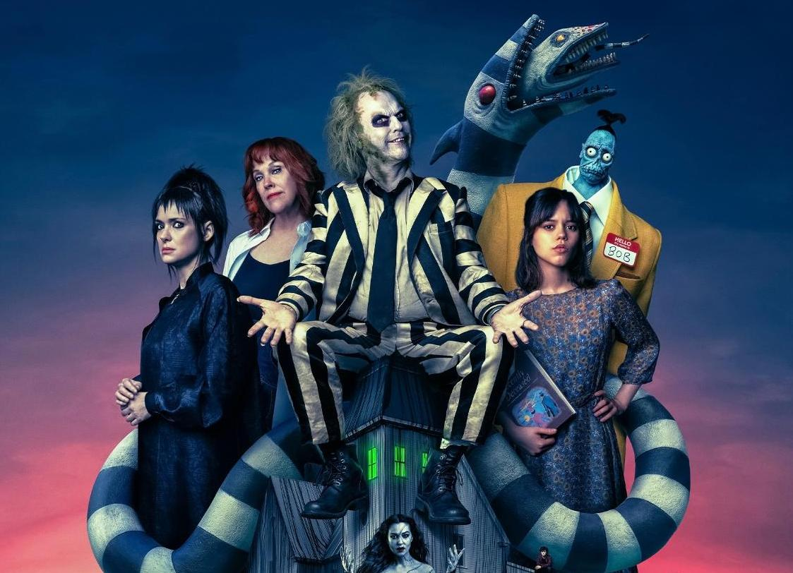
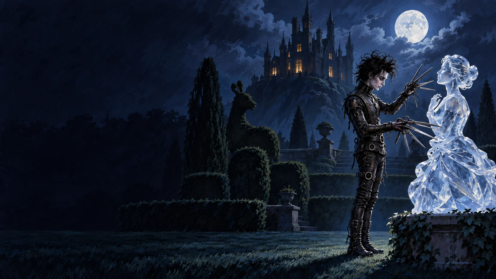
Tim Burton
the child who drew monsters
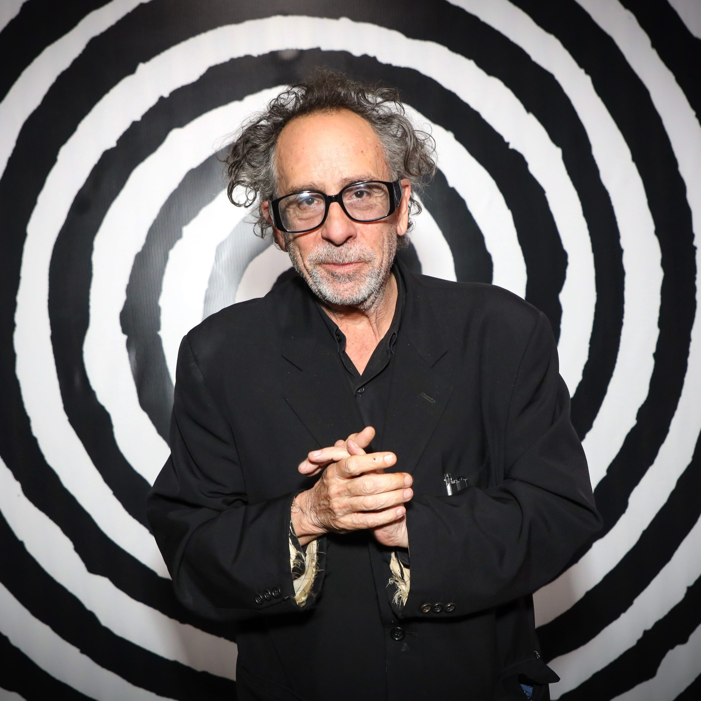
Born in 1958Burbank, California
Biography
Drawing, films
and imagination.
Tim Burton was interested in drawing and films when he was a child.
He especially liked monsters, horror stories, fantasy and old movies. These childhood interests later influenced his films and illustrations.
Education and career
From art school
to animation.
He studied at the California Institute of the Arts. Later, he worked as an animator at Disney. He became a successful filmmaker and visual artist.
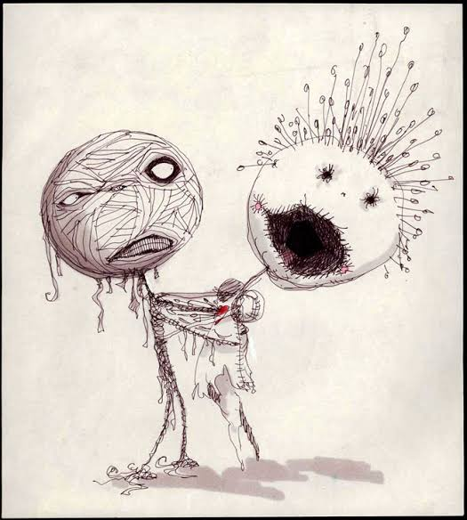
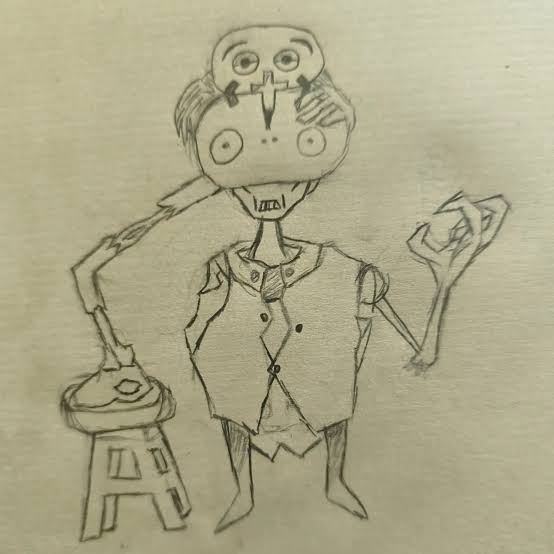
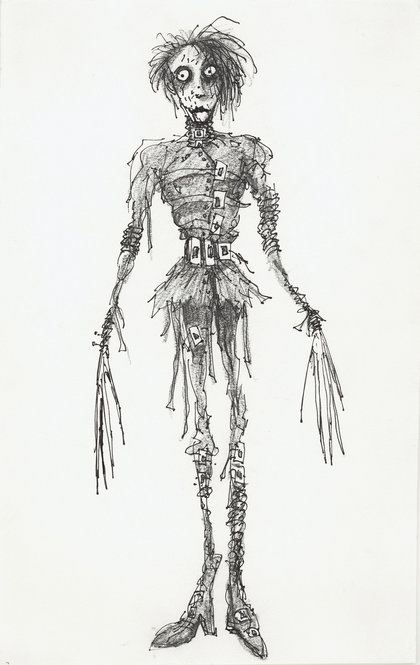
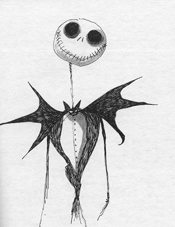
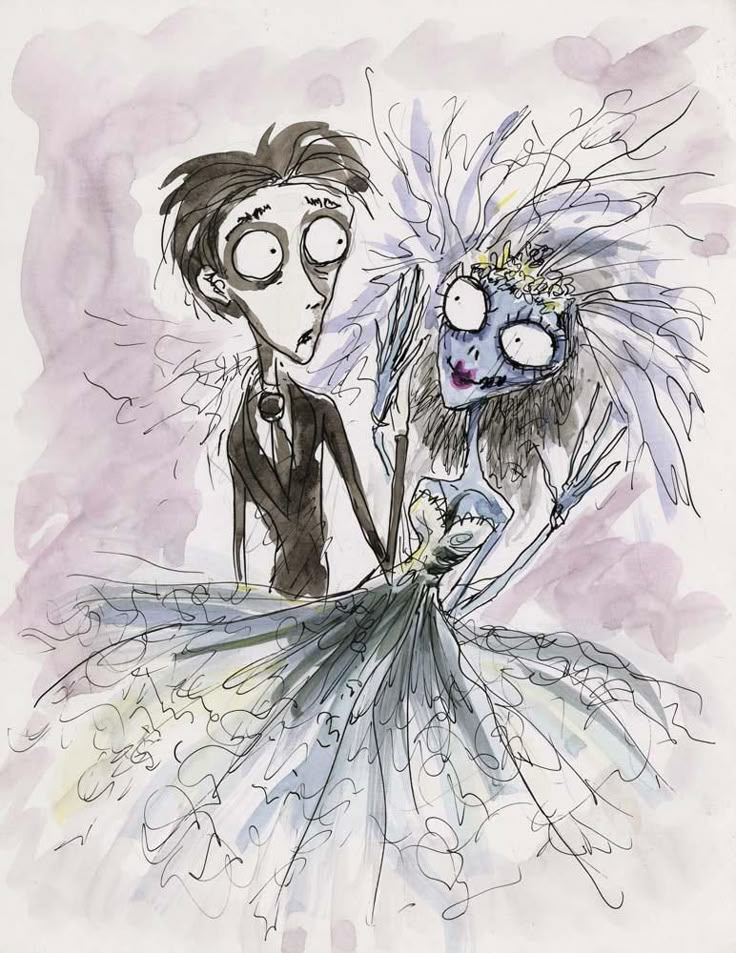
Selected work
Films and characters
His films often have unusual characters and fantastic worlds.
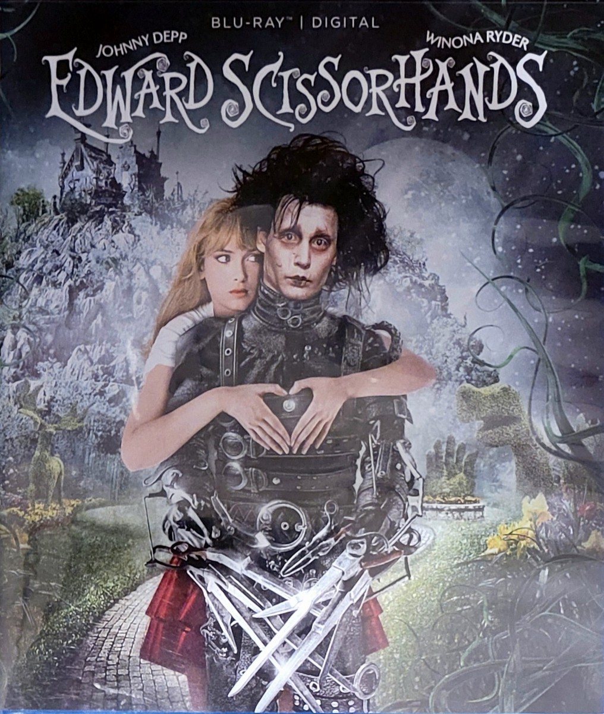
Edward Scissorhands
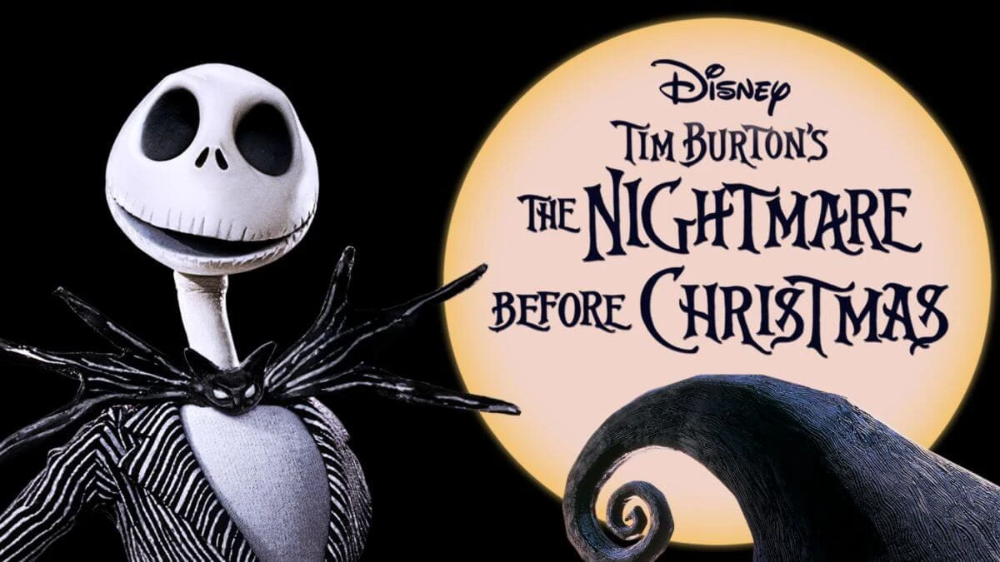
The Nightmare Before Christmas
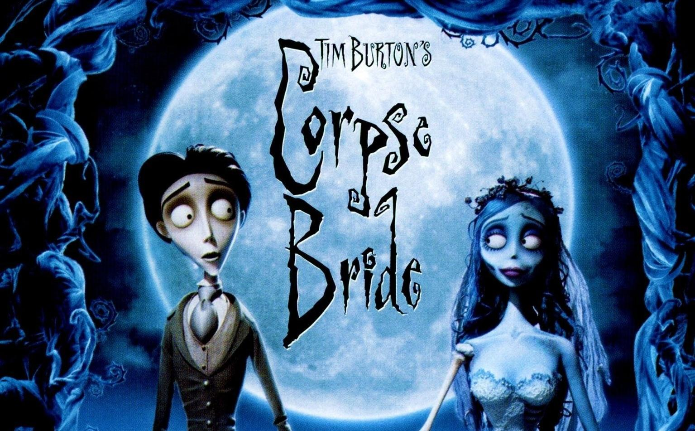
Corpse Bride
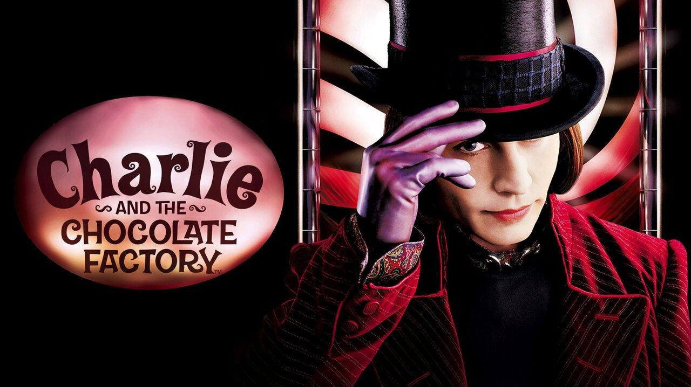
Charlie and the Chocolate Factory
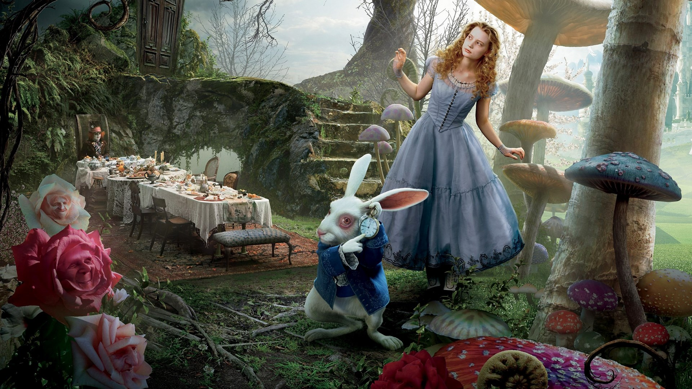
Alice in Wonderland
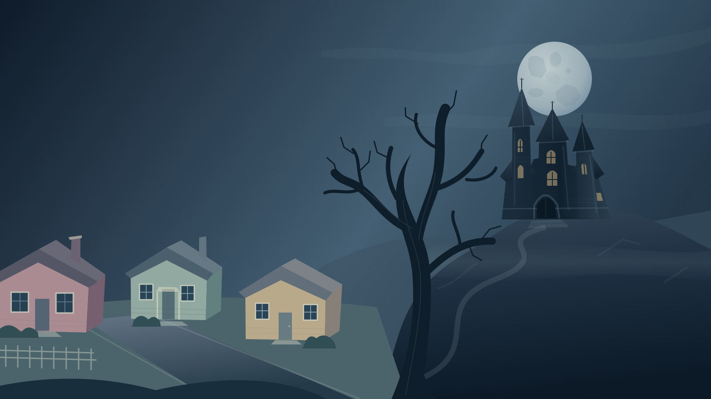
Artistic style
Dark and imaginative
His work is Gothic, strange, surreal and easy to recognize.
Appearance
- Pale faces and big eyes.
- Unusual bodies and dark clothes.
- Dark settings, unusual buildings and fantastic places.
Stories and feelings
- Dark stories can also be funny.
- His characters have strong personalities and emotions.
- Many characters feel different from society.
His unusual art shows that different ideas can be creative.
Key influences
Stories, art
and imagination.
Burton was influenced by horror films, fantasy, Gothic art, animation and old movies.
He liked stories by Edgar Allan Poe and the work of actor Vincent Price, who appeared in many horror films.
His childhood interest in drawing monsters and strange characters later influenced his films and illustrations.
Influences
Horror · fantasy · art · animation
His early interests became part of his visual style.
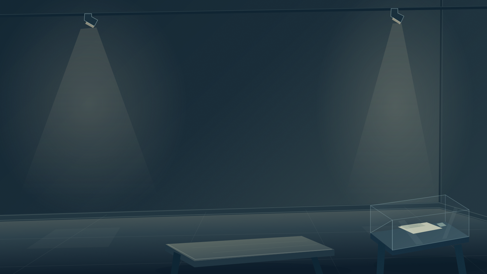
Achievements and cultural impact
Recognized around
the world.
His films have been shown and enjoyed in many countries.
He has received important awards and nominations for his work.
His films and characters are part of popular culture. Edward Scissorhands, Jack Skellington and Beetlejuice are known internationally.
His unusual characters, dark atmosphere and fantastic worlds make his style easy to recognize.
Conclusion
A creative voice
recognized worldwide.
01
An original style
His work combines fantasy, horror, Gothic art, animation and imagination.
02
Popular characters
His characters and stories are part of popular culture and remain popular worldwide.
03
A lasting influence
His work has influenced modern visual culture.
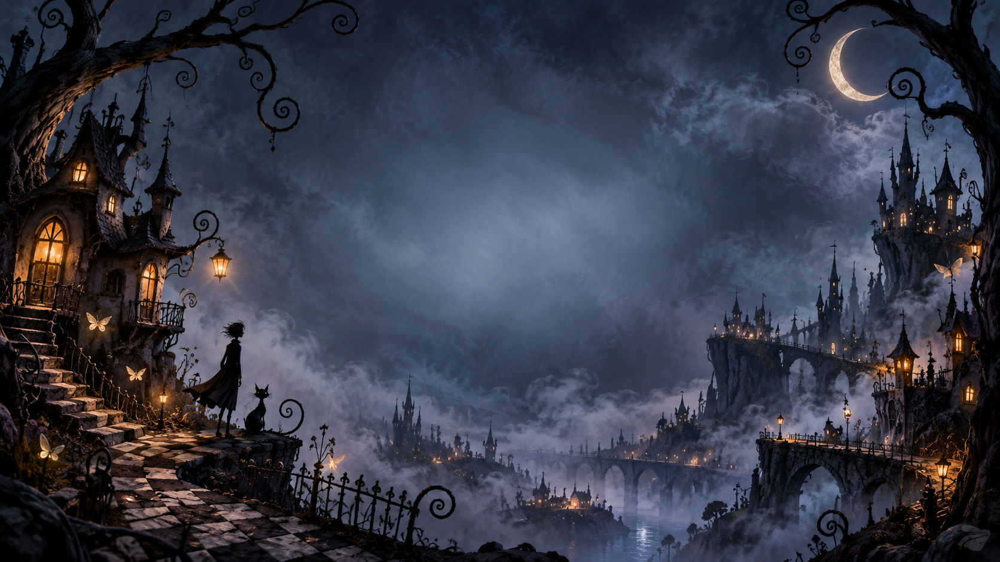